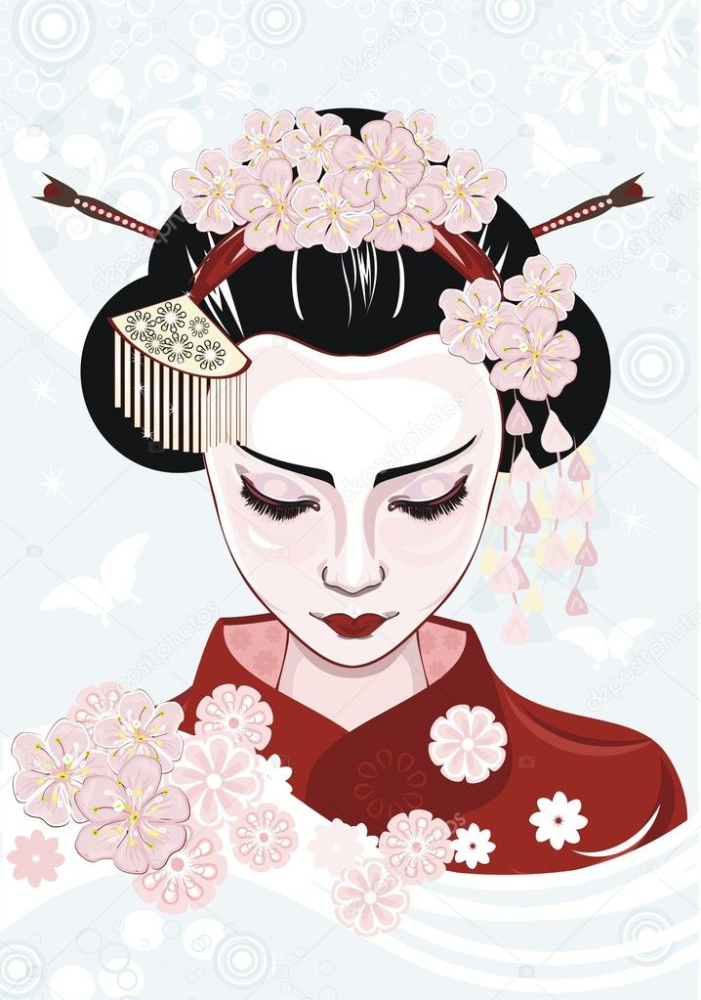

Культура Японии
✿
Богатые традиции, искусство и образ жизни

Традиции
Чайные церемонии, икебана, каллиграфия и древние обычаи.

Искусство
Театр кабуки, кимоно, оригами и другие виды искусства.

Кухня
Японская кухня — это свежесть, эстетика и баланс вкуса.

Праздники
Яркие фестивали и праздники объединяют людей.
Достопримечательности
✿

Фудзи

Киото

Храмы
Контакты
✿
Мы всегда рады вашим вопросам и предложениям
📍 Адрес
Токио, Япония
✉ Email
info@japan-travel.jp
☎ Телефон
+81 90 1234 5678
🕘 Время работы
Пн — Пт: 9:00 — 18:00
